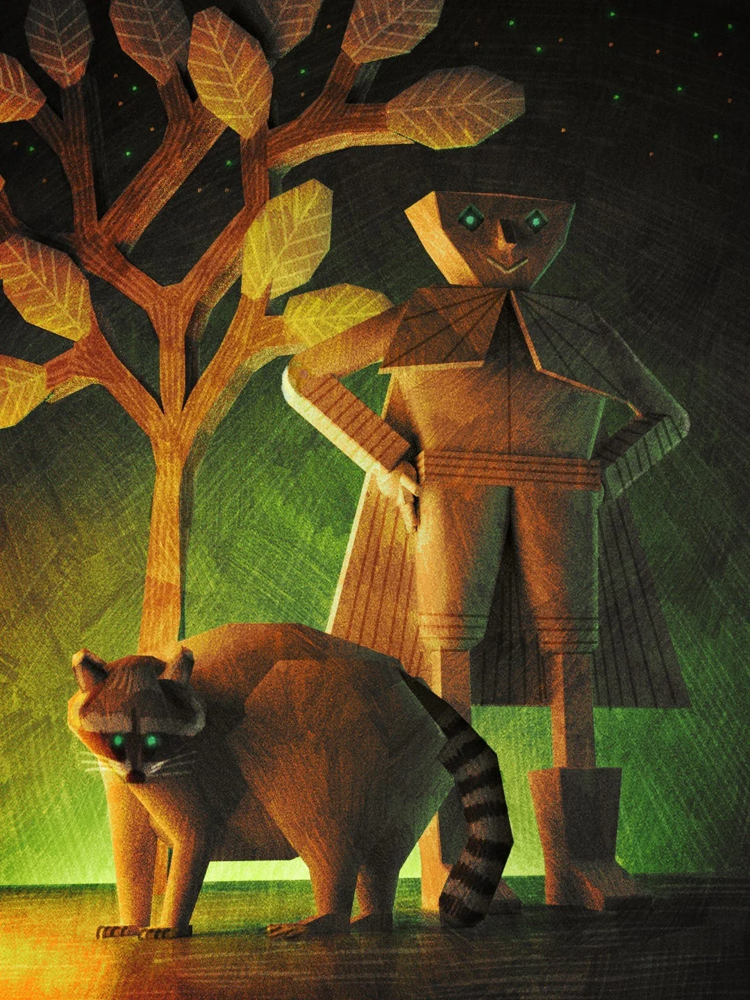

크링클턴의 종이 가장자리가 흥분으로 파들거렸고, 그는 섬세한 찻잔을 종이접기로 만든 손가락들 사이로 균형을 잡고 있었다. 도자기가 그의 ‘엄지’에 딸깍 부딪혔다 — 물론 그게 진짜 엄지라고 하긴 어렵다. 어제자 신문지랑 넘치는 열정으로 만들어졌으니까.
[Crinkleton’s paper edges fluttered with excitement as he balanced the delicate teacup between his origami fingers. The porcelain clinked against his thumb—well, what passed for a thumb when you were made entirely of yesterday’s newspaper and an abundance of enthusiasm.]
“수잔, 이 얼그레이는 정말 환상적이야!” 그가 선언했다. 스포츠면으로 만들어진 성대에서 나오는 특유의 또렷함이 담긴 목소리로. “베르가못을 직접 기른 거야?”
[“Susan, this Earl Grey is absolutely magnificent!” he declared, his voice carrying the particular crispness that came from vocal cords fashioned from the sports section. “Did you grow the bergamot yourself?”]
고대 참나무의 가지들이 아마도 재미있어하는 듯 바스락거렸다. “크링클턴, 얘야, 나는 나무란다. 차를 기르지 않아. 그냥 좋은 것들이 어디 숨어있는지 알 뿐이지.” 그녀의 목소리는 줄기 깊숙한 곳에서 나왔는데, 세기를 거쳐 세상의 부조리함들이 펼쳐지는 것을 지켜본 세월의 깊이가 담겨 있었다. “게다가, 그건 캐모마일이야.”
[The ancient oak’s branches rustled with what might have been amusement. “Crinkleton, dear, I’m a tree. I don’t grow tea. I simply know where the good stuff hides.” Her voice emerged from somewhere deep in her trunk, seasoned with centuries of watching the world’s absurdities unfold. “Besides, that’s chamomile.”]
공유된 의식을 통해, 크링클턴은 맥스트라이프테일의 수염이 억누른 웃음으로 파르르 떨리는 것을 느꼈다. 그 너구리는 수잔의 가장 낮은 가지에 앉아 있었고, 줄무늬 꼬리를 자신만의 찻잔 주위로 말고 있었으며, 초록 눈이 점점이 비치는 오후 햇살에서 부드럽게 빛나고 있었다.
[Through their shared awareness, Crinkleton felt McStripetail’s whiskers twitch with suppressed laughter. The raccoon sat perched on Susan’s lowest branch, his striped tail curled around a teacup of his own, green eyes glowing softly in the dappled afternoon light.]
(또 너를 놀리고 있는 거야,) 맥스트라이프테일의 정신적 목소리가 들렸고, 애정 어린 짜증이 섞여 있었다. (너는 매번 이래.)
[(She’s messing with you again,) came McStripetail’s mental voice, tinged with fond exasperation. (You do this every time.)]
(하지만 베르가못 맛이 나는걸!) 크링클턴이 마음속으로 항의했고, 그의 종이 몸이 분개하며 바스락거렸다.
[(But I can taste the bergamot!) Crinkleton protested silently, his paper form rustling with indignation.]
(그건 내가 그녀의 구멍 안에 숨겨둔 라벤더 쿠키 냄새를 맡을 수 있어서야, 그리고 우리 감각이 또 뒤섞인 거고.)
[(That’s because I can smell the lavender cookies she’s hiding in her hollow, and our senses are crossed again.)]
이것이 그들의 마법적 유대가 주는 특별한 즐거움이자 때때로 저주였다—변덕스러운 숲에서는 흔한 일로, 어울리지 않는 짝들이 공유된 의식의 실로 연결되곤 했다. 크링클턴은 맥스트라이프테일의 예민한 감각을 통해 세상을 경험했고, 맥스트라이프테일은 종이 인간의 무한한 낙관주의와 놀라운 유연성에 접근할 수 있었다.
[This was the peculiar joy and occasional curse of their magical bond—a common enough occurrence in the Whimsy Woods, where unlikely pairs found themselves connected by threads of shared consciousness. Crinkleton experienced the world through McStripetail’s keen senses, while McStripetail gained access to the paper man’s boundless optimism and surprising flexibility.]
“자, 그럼,” 수잔이 계속 말했다. 지혜나 특히 신랄한 관찰을 내놓을 때 쓰는 어조로. “오늘 너희 둘이 내 숲에 온 이유가 뭔가? 설마 내 반짝이는 대화 때문만은 아니겠지.”
[“Now then,” Susan continued, her voice taking on the tone she used when dispensing wisdom or particularly cutting observations, “what brings you two to my grove today? Surely not just my sparkling conversation.”]
“사실은,” 크링클턴이 말을 시작하며, 너무 빨리 움직이면 손가락이 찢어질지도 모르는 사람의 조심스러운 정확성으로 찻잔을 내려놓았다. “당신이 혹시 이것에 대해 뭔가 아실까 해서—”
[“Actually,” Crinkleton began, setting down his teacup with the careful precision of someone whose fingers might tear if he moved too quickly, “we were hoping you might know something about—”]
첫 번째 수리검이 수잔의 나무껍질에 단단한 툭 소리와 함께 박혔다. 정확히 한 순간 전 크링클턴의 머리가 있던 자리에.
[The first throwing star embedded itself in Susan’s bark with a solid thunk, precisely where Crinkleton’s head had been a moment before.]
(엎드려!) 맥스트라이프테일의 정신적 외침이 가지에서 뛰어내리는 그의 물리적 행동과 동시에 일어났고, 더 많은 투사체들이 공기를 가르며 날아오는 가운데 둘 다 완벽한 동조 속에서 움직였다.
[(Duck!) McStripetail’s mental shout coincided with his physical leap from the branch, both of them moving in perfect synchronization as more projectiles whistled through the air.]
“아, 정말 짜증나,” 수잔이 중얼거렸고, 그녀의 가지들이 짜증스럽게 흔들렸다. “또야.”
[“Oh, for crying out loud,” Susan muttered, her branches swaying irritably. “Not again.”]
여섯 명의 인물이 덤불에서 그림자가 형태를 갖춘 듯한 유려한 우아함으로 나타났다. 그들의 검은 의복은 빛을 흡수하는 것 같았고, 그들의 움직임은 아무 곳에서나 극적으로 나타나는 기술을 완벽하게 익히기 위해 수년을 보냈음을 말해주었다. 이들은 선술집 이야기에 나오는 서투른 암살자들이 아니었다—이들은 전문가들이었다.
[Six figures materialized from the undergrowth with the fluid grace of shadows given form. Their black garments seemed to absorb light, and their movements spoke of years spent perfecting the art of appearing dramatically from nowhere. These were not the bumbling assassins of tavern tales—these were professionals.]
“무한 지혜의 성스러운 도토리의 수호자들이여!” 대장 닌자가 선언했다. 대부분 사람들의 집보다 비쌌을 법한 가면에 가려진 그의 목소리로. “그 유물을 넘겨라, 그러면 너희는 순식간에 죽게될 것이다!”
[“Guardians of the Sacred Acorn of Infinite Wisdom!” the lead ninja declared, his voice muffled by a mask that had probably cost more than most people’s houses. “Surrender the artifact, and your deaths will be swift!”]
맥스트라이프테일의 정신적 한숨이 그들의 유대를 통해 메아리쳤다. (아, 이 뻔한 소리. 내가 맞춰볼게—누군가 우리가 어떤 전설적인 견과의 신비로운 보호자라고 말했겠지?)
[McStripetail’s mental sigh echoed through their bond. (Oh, this old chestnut. Let me guess—someone told them we’re mystical protectors of some legendary nut?)]
(어떻게 알았어?) 크링클턴이 친구의 추리 능력에 진심으로 감탄하며 물었다.
[(How did you know?) Crinkleton asked, genuinely impressed by his friend’s deductive abilities.]
(이런 일이 매달 세 번째 화요일마다 일어나거든. 지난달에는 운명의 마법 솔방울이었어. 그 전에는 영원한 젊음의 신비로운 버섯이었고.)
[(Because this happens every third Tuesday. Last month it was the Enchanted Pinecone of Destiny. Before that, the Mystical Mushroom of Eternal Youth.)]
닌자들은 완벽한 원을 그리며 배치되어 있었고, 이전에 여러 번 해봤음을 시사하는 정밀함으로 무기를 뽑아들었다. 그들의 대장이 앞으로 나섰고, 크링클턴은 가면을 통해 그 남자의 눈을 볼 수 있었다—차갑고, 전문가적이며, 자신의 임무의 정당성을 전적으로 확신하고 있었다.
[The ninjas had arranged themselves in a perfect circle, weapons drawn with the kind of precision that suggested they’d done this many times before. Their leader stepped forward, and Crinkleton could see the man’s eyes through the mask—cold, professional, and utterly convinced of his mission’s righteousness.]
“우리는 네가 그 도토리를 소유하고 있다는 것을 안다,” 닌자가 계속 말했다. “우리의 조사는 철저하다. 빛나는 초록 눈, 종족 간의 부자연스러운 유대, 비밀의 고대 참나무와의 근접성—모든 징후가 너를 가리킨다.”
[“We know you possess the acorn,” the ninja continued. “Our research is thorough. The glowing green eyes, the unnatural bond between species, the proximity to the Ancient Oak of Secrets—all signs point to you.”]
“비밀의 고대 참나무?” 수잔의 목소리가 경멸로 가득했다. “나는 수잔이야. 여기서 자라고 있어. 가끔 차와 비꼬는 말을 베풀어주지. 내가 가진 가장 비밀스러운 것이라곤 맛있는 비스킷을 어디에 숨겨두는지 정도야.”
[“Ancient Oak of Secrets?” Susan’s voice dripped with disdain. “I’m Susan. I grow here. I occasionally dispense tea and sarcasm. The most secretive thing about me is where I hide my good biscuits.”]
(우리가 그들에게 완전히 평범한 말하는 너구리와 열정적인 종이 인간을 잘못 찾았다고 말해줘야 할까?) 크링클턴이 궁금해했다.
[(Should we tell them they’ve got the wrong completely ordinary talking raccoon and enthusiastic paper man?) Crinkleton wondered.]
(내 경험상, 이렇게 확신하며 틀린 사람들은 이성의 소리를 듣지 않아,) 맥스트라이프테일이 답했다. (게다가, 저들의 자세를 봐. 정말 실력이 있어.)
[(In my experience, people this committed to being wrong don’t listen to reason,) McStripetail replied. (Besides, look at their stance. They’re actually good at this.)]
실제로, 닌자들은 잘 조율된 기계의 유려한 협조로 움직였다. 그들이 다가올 때, 크링클턴은 맥스트라이프테일의 의식이 자신의 것과 더욱 완전히 합쳐지는 것을 느꼈다—너구리의 공간 추리력이 종이 인간의 유연성과 결합되어 그들을 각각의 합보다 더 큰 존재로 만들었다.
[Indeed, the ninjas moved with the fluid coordination of a well-oiled machine. As they closed in, Crinkleton felt McStripetail’s awareness merge more fully with his own—the raccoon’s spatial reasoning combining with the paper man’s flexibility in ways that made them something greater than the sum of their parts.]
첫 번째 닌자가 포획된 달빛처럼 번쩍이는 칼날로 돌진했다. 의식적인 생각 없이, 크링클턴은 자신을 불가능한 종이접기 학으로 접었고 맥스트라이프테일의 반사신경이 그 움직임을 안내했다. 검은 고체 물질이 있어야 할 공간을 무해하게 통과했다.
[The first ninja lunged with a blade that gleamed like captured moonlight. Without conscious thought, Crinkleton folded himself into an impossible origami crane while McStripetail’s reflexes guided the movement. The sword passed harmlessly through the space where solid matter should have been.]
(왼쪽, 둘이 더 온다,) 맥스트라이프테일의 정신적 목소리는 침착하고 집중되어 있었다.
[(Left side, two more coming,) McStripetail’s mental voice was calm, focused.]
(알겠어,) 크링클턴이 답하며, 가장 가까운 공격자의 발목을 감는 종이 채찍으로 펼쳐졌다.
[(Got it,) Crinkleton replied, unfolding into a paper whip that wrapped around the nearest attacker’s ankle.]
그 다음에 벌어진 것은 완벽한 협조의 춤이었다. 맥스트라이프테일의 민첩성이 크링클턴의 유연한 형태를 통해 흘러나왔고, 종이 인간의 창의적 문제해결력이 너구리의 타고난 교활함을 향상시켰다. 그들은 두 개의 몸을 가진 하나의 존재로서 움직였고, 공유된 의식의 완벽한 정밀함으로 서로의 행동을 예측했다.
[What followed was a dance of perfect coordination. McStripetail’s agility flowed through Crinkleton’s malleable form, while the paper man’s creative problem-solving enhanced the raccoon’s natural cunning. They moved as one entity with two bodies, anticipating each other’s actions with the seamless precision of shared consciousness.]
닌자의 지팡이가 맥스트라이프테일의 머리를 향해 휙 날아왔다. 너구리는 몸을 숙이는 동시에 크링클턴이 자신의 뒤에서 방패로 접히고 있다는 것을 알고 있었다. 다른 공격자는 자신의 수리검들이 종이접기 그물처럼 보이는 것에 걸린 것을 발견했고, 맥스트라이프테일은 발톱을 사용해 검 찌르기를 근처 나무 줄기로 방향을 바꿨다.
[A ninja’s staff whistled toward McStripetail’s head. The raccoon ducked while simultaneously knowing that Crinkleton was folding himself into a shield behind him. Another attacker found his throwing stars caught in what appeared to be an origami net, while McStripetail used his claws to redirect a sword thrust into a nearby tree trunk.]
“불가능해!” 대장 닌자가 자신의 정교하게 조율된 공격이 혼돈으로 무너지자 헐떡였다. “예언이 그들의 힘에 대해 말했지만, 이건—”
[“Impossible!” the lead ninja gasped as his carefully coordinated assault dissolved into chaos. “The prophecy spoke of their power, but this—”]
“아, 예언은 집어치워,” 수잔이 끼어들었다. 그녀의 뿌리들이 갑자기 땅에서 솟아나 목표물들을 측면에서 공격하려던 두 닌자를 걸려 넘어뜨렸다. “이 둘은 샌드위치도 지킬 수 없어, 하물며 신비로운 도토리는. 그냥 죽지 않는 데 아주 능할 뿐이야. 유용한 기술이긴 하지만 예언적이지는 않아.”
[“Oh, stuff the prophecy,” Susan interrupted, her roots suddenly erupting from the ground to trip two ninjas who were attempting to flank their targets. “These two couldn’t guard a sandwich, let alone a mystical acorn. They’re just very good at not dying, which is a useful skill but hardly prophetic.”]
(그녀가 도와주고 있어!) 크링클턴이 기뻐하며 관찰했다. 특히 열정적인 검날을 피하기 위해 종이비행기로 변신하면서도.
[(She’s helping!) Crinkleton observed with delight, even as he transformed into a paper airplane to avoid a particularly enthusiastic sword swing.]
(그녀는 항상 도와줘,) 맥스트라이프테일이 답하며, 닌자의 어깨에 우아하게 착지해서 그 남자 자신의 추진력을 이용해 동료들에게 굴러떨어뜨렸다. (그냥 신경 안 쓰는 척할 뿐이야.)
[(She always helps,) McStripetail replied, landing gracefully on a ninja’s shoulders and using the man’s own momentum to send him tumbling into his companions. (She just pretends she doesn’t care.)]
대장 닌자가 절망적으로 변해 허리춤 주머니에서 실제 성스러운 도토리처럼 보이는 것을 꺼냈을 때 전투는 절정에 달했다. 그것은 내면의 빛으로 빛났고 간신히 억제된 힘으로 윙윙거렸다.
[The battle reached its crescendo when the lead ninja, growing desperate, produced what appeared to be an actual Sacred Acorn from his belt pouch. It glowed with an inner light and hummed with barely contained power.]
“진짜 유물을 되찾을 수 없다면,” 그가 선언했다, “이 가짜를 사용해서—”
[“If we cannot retrieve the true artifact,” he declared, “then we shall use this decoy to—”]
“실례합니다,” 도토리 자체에서 나온 작고 정중한 목소리가 끼어들었다. “저는 가짜가 아니에요. 저는 아콘리우스예요. 여러분이 이 모든 소리를 지르기 시작했을 때 그냥 낮잠을 자려던 중이었어요.”
[“Excuse me,” interrupted a small, polite voice from the acorn itself. “I’m not a decoy. I’m Acornlius. I was just trying to take a nap when you people started all this shouting.”]
닌자는 자신의 손 안에 있는 말하는 도토리를 뚫어져라 쳐다봤다. “당신… 당신이 말할 수 있어요?”
[The ninja stared at the talking acorn in his hand. “You… you can speak?”]
“우리 대부분이 할 수 있어요,” 아콘리우스가 특별히 둔한 아이에게 뻔한 것을 설명하는 사람의 참을성 있는 어조로 답했다. “단지 그렇게 하지 않기로 선택할 뿐이죠. 솔직히 말해서, 대부분의 대화는 노력을 들일 가치가 없거든요. 지금 여기 계신 분들도 포함해서요.”
[“Most of us can,” Acornlius replied with the patient tone of someone explaining something obvious to a particularly slow child. “We simply choose not to, because frankly, most conversations aren’t worth the effort. Present company included.”]
(모든 도토리가 말할 수 있어,) 맥스트라이프테일이 그들의 유대를 통해 크링클턴에게 설명했다. (단지 언제 시간을 들일 가치가 있는지에 대해 엄청나게 까다로울 뿐이야.)
[(All acorns can talk,) McStripetail explained to Crinkleton through their bond. (It’s just that they’re incredibly judgmental about when it’s worth their time.)]
닌자들은 서로를 보더니, 아콘리우스를, 그리고 이 상황을 흥미롭게 지켜보기 위해 방어 동작을 멈춘 크링클턴과 맥스트라이프테일을 번갈아 봤다.
[The ninjas looked at each other, then at Acornlius, then at Crinkleton and McStripetail, who had paused their defensive maneuvers to watch this development with interest.]
“그럼,” 대장 닌자가 천천히 말했다, “당신들은 무한 지혜의 성스러운 도토리의 수호자들이 아닌 거군요?”
[“So,” the lead ninja said slowly, “you’re not the Guardians of the Sacred Acorn of Infinite Wisdom?”]
“네,” 맥스트라이프테일이 명랑하게 답했다. “그냥 우연히 마법적으로 결속된 너구리와 종이 인간일 뿐이에요. 이 근처에서는 놀랍도록 흔한 일이거든요.”
[“Nope,” McStripetail replied cheerfully. “Just a raccoon and a paper man who happen to be magically bonded. It’s surprisingly common around here.”]
“그리고 저는,” 아콘리우스가 상당한 위엄을 갖추고 덧붙였다, “무한 지혜의 성스러운 도토리가 아니에요. 그냥 아콘리우스예요. 성스러운 도토리는 세 숲 너머에 살고 있고, 솔직히 말해서 그 지혜 문제에 대해서는 참을 수 없을 정도로 거만해요.”
[“And I,” Acornlius added with considerable dignity, “am not the Sacred Acorn of Infinite Wisdom. I’m just Acornlius. The Sacred Acorn lives three groves over and is, frankly, insufferably pretentious about the whole wisdom thing.”]
그 후에 따른 침묵은 오직 수잔의 재미있어하는 낄낄거림으로만 깨졌는데, 가을 나뭇잎 사이로 부는 바람 같은 소리였다.
[The silence that followed was broken only by Susan’s amused chuckling, a sound like wind through autumn leaves.]
“음,” 대장 닌자가 마침내 말했다, “이거 당황스럽군요.”
[“Well,” the lead ninja said finally, “this is embarrassing.”]
“생각보다 자주 일어나는 일이에요,” 수잔이 관찰했다. “지난주에는 누군가 제 ‘영원한 지식의 고대 나무껍질'을 훔치려고 했어요. 알고 보니 마을에 있는 도서관을 원했는데, 길 안내를 잘못 이해한 거였죠.”
[“Happens more often than you’d think,” Susan observed. “Last week someone tried to steal my 'Ancient Bark of Eternal Knowledge.’ Turned out they wanted the library in town, but got confused by the directions.”]
닌자들은 도착했을 때 보여줬던 극적인 기품보다 훨씬 덜한 기품으로 흩어진 무기들을 거둬들이기 시작했다. 그들의 대장이 크링클턴과 맥스트라이프테일에게 다가왔는데, 가면 너머로는 알기 어려웠지만 부끄러워하는 것 같았다.
[The ninjas began to gather their scattered weapons with considerably less dramatic flair than they’d displayed upon arrival. Their leader approached Crinkleton and McStripetail with what might have been sheepishness, though it was hard to tell through the mask.]
“저희 고용주가 묘사에 대해 아주 구체적이었거든요,” 그가 사과하듯 말했다. “빛나는 초록 눈, 특이한 동반자 관계, 고대 지혜와의 근접성…”
[“Our employer was quite specific about the description,” he said apologetically. “Glowing green eyes, unusual partnership, proximity to ancient wisdom…”]
“당신의 고용주는 더 나은 조사에 투자하는 게 좋을 것 같네요,” 맥스트라이프테일이 제안했다. “아니면 최소한 무장한 전문가들을 보내서 지역민들을 위협하기 전에 직접 이 지역을 방문하든지요.”
[“Your employer might want to invest in better research,” McStripetail suggested. “Or at least visit the area before sending armed professionals to threaten the locals.”]
“저희가… 저희가 그렇게 전달하겠습니다,” 닌자가 답했다. 그는 잠시 멈춘 후 덧붙였다, “당신들 둘은 함께 아주 잘 싸우시네요. 신비로운 유물 보호업에 관심이 있으신가요? 급여가 훌륭하고, 복리후생에는 포괄적인 건강보험도 포함되어 있어요.”
[“We'll… we’ll pass that along,” the ninja replied. He paused, then added, “You two fight very well together. Have you considered a career in mystical artifact protection? The pay is excellent, and the benefits include comprehensive health coverage.”]
(사실 그건 나쁘지 않은 아이디어야,) 맥스트라이프테일이 그들의 유대를 통해 곰곰이 생각했다.
[(That’s actually not a terrible idea,) McStripetail mused through their bond.]
(정말?) 크링클턴의 종이 형태가 흥분으로 거의 진동했다. (우리가 전문 수호자가 될 수 있어! 만나게 될 모든 흥미로운 사람들을 생각해봐!)
[(Really?) Crinkleton’s paper form practically vibrated with excitement. (We could be professional guardians! Think of all the interesting people we’d meet!)]
(우리를 죽이려고 할 모든 흥미로운 사람들을 생각해봐,) 맥스트라이프테일이 반박했지만, 그의 정신적 목소리에는 진심어린 고려의 기색이 담겨 있었다.
[(Think of all the interesting people who’d try to kill us,) McStripetail countered, but his mental voice carried a note of genuine consideration.]
“생각해보겠습니다,” 크링클턴이 소리 내어 말했다. 그의 열정이 가장자리를 흥분한 날개처럼 파들거리게 만들었다.
[“We’ll think about it,” Crinkleton said aloud, his enthusiasm making his edges flutter like excited wings.]
닌자들이 도착했을 때보다 훨씬 덜 극적으로 숲 속으로 스며들어 사라지자, 수잔의 가지들이 이제는 확실히 웃음인 것으로 바스락거렸다.
[As the ninjas melted back into the forest with considerably less drama than their arrival, Susan’s branches rustled with what was definitely laughter now.]
“음,” 그녀가 말했다, “평소 화요일 오후보다 훨씬 재미있었네. 아콘리우스, 차 한잔하고 갈래? 대화가 적절히 지루할 거라고 약속할게.”
[“Well,” she said, “that was more entertaining than my usual Tuesday afternoon. Acornlius, would you care to stay for tea? I promise the conversation will be suitably boring.”]
“그래야겠군요,” 아콘리우스가 엄청난 희생을 치르는 사람의 태도로 답했다. “하지만 미리 경고하자면, 적절한 우림 시간에 대해서는 아주 강한 의견을 가지고 있어요.”
[“I suppose,” Acornlius replied with the air of someone making a tremendous sacrifice. “Though I should warn you, I have very strong opinions about proper steeping times.”]
크링클턴과 맥스트라이프테일이 눈을 마주쳤다—아니 더 정확히는, 그들의 유대를 통해 눈을 마주치는 감각을 공유했다.
[Crinkleton and McStripetail exchanged a look—or rather, shared the sensation of exchanging a look through their bond.]
(다음 주 같은 시간에?) 크링클턴이 물었다.
[(Same time next week?) Crinkleton asked.]
(놓칠 수 없지,) 맥스트라이프테일이 답했다. (하지만 아마 우리만의 컵을 가져와야 할 것 같아. 수잔이 오락을 위해 입장료를 받기 시작할 것 같은 느낌이 들어.)
[(Wouldn’t miss it,) McStripetail replied. (Though maybe we should bring our own cups. I have a feeling Susan’s going to start charging admission for the entertainment.)]
그들이 중단된 차 파티로 다시 자리를 잡으면서, 아콘리우스가 캐모마일의 적절한 온도에 대해 실황 해설을 제공하고 수잔이 그녀만의 애정 어린 비꼬는 말을 나누어주는 가운데, 크링클턴은 전설적인 수호자로 오인받는 것이 실제로 전설적인 수호자가 되는 것만큼이나 좋다고 생각하지 않을 수 없었다.
[As they settled back into their interrupted tea party, with Acornlius providing running commentary on the proper temperature for chamomile and Susan dispensing her particular brand of affectionate sarcasm, Crinkleton couldn’t help but think that being mistaken for legendary guardians was almost as good as actually being legendary guardians.]
거의 그만큼이나, 하지만 완전히 그런 것은 아니었다. 그는 수잔에게 그 직업 기회에 대해 물어보겠다고 마음속으로 메모했다. 결국, 전문적인 유물 보호가 얼마나 어려울 수 있겠는가?
[Almost, but not quite. He made a mental note to ask Susan about that career opportunity. After all, how hard could professional artifact protection really be?]
그들의 유대를 통해, 그는 이 생각에 대한 맥스트라이프테일의 재미있어하는 체념과, 그것이 실제로 재미있을지도 모른다는 너구리의 마지못한 인정을 느꼈다.
[Through their bond, he felt McStripetail’s amused resignation at this thought, along with the raccoon’s grudging admission that it might actually be fun.]
멀리서, 나무에서 도토리 하나가 떨어져서 중력의 굴욕에 대해 큰 소리로 불평하기 시작했다. 크링클턴이 생각하기에, 그것은 변덕스러운 숲에서의 완전히 평범한 화요일이었다.
[In the distance, an acorn fell from a tree and began complaining loudly about the indignity of gravity. It was, Crinkleton reflected, a perfectly ordinary Tuesday in the Whimsy Woods.]